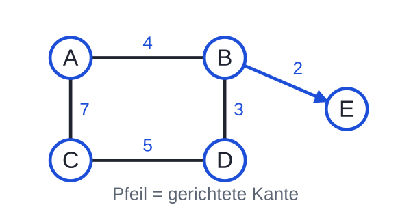

Der Liniennetzplan der Dresdner Straßenbahn, deine Kontakte in einem Messenger oder die Verlinkungen zwischen Webseiten: Überall geht es um Dinge und ihre Verbindungen. Ein Graph ist eine abstrakte Darstellung einer Menge von Objekten (Knoten), bei der einige Paare dieser Objekte durch Kanten verbunden sind. Graphen werden in vielen Disziplinen verwendet, um Beziehungen zwischen Objekten zu untersuchen und darzustellen. Sie sind grundlegend für viele Bereiche der Informatik und Mathematik.
Ein Graph beschreibt nur, was womit verbunden ist – Haltestellen und Gleise, Personen und Freundschaften, Webseiten und Links. Im Video lernst du an einem kleinen Graphen mit den Knoten A bis E die wichtigsten Begriffe kennen. Achte darauf, wie sich gerichtete und gewichtete Graphen unterscheiden und was einen Weg von einem Zyklus unterscheidet.
Zum Nachlesen:
Gerichtete Graphen haben Kanten mit einer Richtung, dargestellt durch Pfeile. Beispiel: ein Straßennetz mit Einbahnstraßen, in dem man von A nach B, aber nicht unbedingt umgekehrt fahren kann.
Ungerichtete Graphen haben Kanten ohne Richtung; jede Verbindung gilt in beide Richtungen. Beispiel: ein Freundschaftsnetzwerk, in dem eine Kante eine beidseitige Freundschaft darstellt.
Bei gewichteten Graphen ist jeder Kante ein Wert („Gewicht“) zugeordnet, bei dem es sich z. B. um eine Entfernung, eine Fahrzeit oder Kosten handelt.

Nachbarn: Zwei Knoten sind benachbart (adjazent), wenn sie durch eine Kante verbunden sind.
Weg: eine Folge von Knoten, bei der jeder Knoten mit dem nächsten durch eine Kante verbunden ist. Die Länge eines Wegs ist die Anzahl seiner Kanten bzw. bei gewichteten Graphen die Summe der Gewichte.
Zyklus: ein Weg, der am selben Knoten beginnt und endet und dabei keinen anderen Knoten mehrfach besucht.
Ein ungerichteter Graph hat die Kanten A–B, B–C, C–A und C–D. Zeichne ihn. Nenne die Nachbarn von C, einen Weg von A nach D mit der Länge 2 und einen Zyklus. Ist der Graph ein Baum?
Nachbarn von C: A, B und D. Weg der Länge 2: A – C – D. Zyklus: A – B – C – A. Kein Baum, denn ein Baum hat keine Zyklen.
Danach: Aufgabe 3.7.1 – dieselben Begriffe am Straßenbahnnetz (der Graph steht in Beispiel 2 in Schritt 3).
Weiter mit Schritt 2: Adjazenzmatrix und Adjazenzliste →
Ein Computer kann keine Bilder von Graphen speichern. Er braucht eine Tabelle oder Listen. Im Video siehst du beide Darstellungen am selben kleinen Graphen – ungerichtet, gerichtet und gewichtet. Achte darauf, warum die Matrix eines ungerichteten Graphen symmetrisch ist und was die Liste an Platz spart.
Zum Nachlesen:
Adjazenzmatrix: eine n×n-Tabelle, deren Eintrag in Zeile i und Spalte j angibt, ob (bzw. mit welchem Gewicht) eine Kante von Knoten i zu Knoten j existiert. Bei ungerichteten Graphen ist die Matrix symmetrisch.
Adjazenzliste: Zu jedem Knoten wird eine Liste seiner Nachbarn gespeichert.
Ein ungerichteter Graph hat die Knoten 1, 2, 3, 4 und die Kanten 1–2, 1–3 und 3–4. Wie viele Einsen stehen in seiner Adjazenzmatrix? Gib die Adjazenzliste an.
6 Einsen: 3 Kanten, jede steht zweimal in der Matrix (Zeile i, Spalte j und Zeile j, Spalte i). Adjazenzliste: 1: [2, 3] · 2: [1] · 3: [1, 4] · 4: [3].
Danach: Aufgabe 3.7.2 – Matrix und Liste eines gerichteten Graphen, und Aufgabe 3.7.3 – Matrix oder Liste für ein großes Straßennetz?
Weiter mit Schritt 3: Das Straßenbahnnetz in Python →
In Python speichert man einen gewichteten Graphen bequem als Dictionary: Jede Station ist ein Schlüssel, ihr Wert ist ein inneres Dictionary „Nachbar → Fahrzeit“. Im Video fragst du in der Kommandozeile Nachbarn und Gewichte ab. Achte darauf, was bei einer fehlenden Kante passiert und wie du vorher mit in prüfst, ob es die Kante gibt.
Jetzt du – mittippen: Lege 3_graphen/strassenbahn.py an und tippe den Code aus dem Video ab. Starte mit F5 und vergleiche die Ausgabe mit dem Video. Danach committen, z. B. 3.7 Schritt 3: Code aus dem Video ergänzt.
Zum Nachlesen steht der ganze Code mit Erklärungen in Beispiel 2 (Schritt 4 nutzt ihn weiter):
Was liefern diese Eingaben für das Dictionary netz aus Beispiel 2? Überlege erst, dann probiere es in Thonny aus.
netz["Altmarkt"]["Postplatz"]
list(netz["Pieschen"])
"Pieschen" in netz["Neustadt"]
netz["Neustadt"]["Pieschen"]5 · ['Albertplatz'] · False (keine Kante von Neustadt nach Pieschen) · KeyError: 'Pieschen', weil Neustadt keinen Schlüssel „Pieschen“ hat.
Weiter mit Schritt 4: Vom Dictionary zur Matrix →
Aus dem Dictionary entsteht die Adjazenzmatrix mit zwei ineinander geschachtelten Schleifen. Im Video entsteht erst eine einzelne Zeile der Matrix, dann die ganze. Achte darauf, welche Schleife die Zeilen und welche die Spalten erzeugt. Der Code ist der untere Teil von Beispiel 2 in Schritt 3.
Jetzt du – mittippen: Ergänze in 3_graphen/strassenbahn.py den Code aus dem Video. Starte mit F5 und vergleiche die Ausgabe mit dem Video. Danach committen, z. B. 3.7 Schritt 4: Code aus dem Video ergänzt.
Gegeben sind g = {"A": {"B": 2}, "B": {"A": 2}, "C": {}} und namen = list(g). Welche Liste zeile entsteht in der inneren Schleife für a = "A"? Welche Matrix entsteht insgesamt?
[0, 2, 0] – die Zeile von A. Die ganze Matrix: [[0, 2, 0], [2, 0, 0], [0, 0, 0]]. C hat keine Kanten, deshalb ist seine Zeile (und Spalte) überall 0.
Danach: Aufgabe 3.7.4 – Wer folgt wem? Speichere einen gerichteten Graphen in Python.
Alltag: Dein Navi speichert das Straßennetz als gerichteten, gewichteten Graphen: Kreuzungen sind Knoten, Straßenabschnitte sind Kanten, die Gewichte sind Fahrzeiten, Einbahnstraßen sind gerichtete Kanten. Die Funktion „Personen, die du kennen könntest“ sucht im Freundschaftsgraphen nach Freunden deiner Freunde.
Beruf: Verkehrsplanerinnen und -planer, z. B. bei Verkehrsverbünden wie dem VVO, modellieren Liniennetze als Graphen, um Umsteigezeiten und Fahrpläne zu optimieren. Netzwerkadministratorinnen und -administratoren betrachten Router als Knoten und Leitungen als Kanten, um Ausfälle zu analysieren. Data Scientists werten mit Graphdatenbanken Beziehungen zwischen Kunden oder Betrugsmuster bei Banküberweisungen aus.
Ein Graph G = (V, E) besteht aus einer Menge von Knoten V (engl. vertices) und einer Menge von Kanten E (engl. edges), die jeweils zwei Knoten verbinden. Graphen bilden Verbindungen und Beziehungen ab. Ein Baum ist ein spezieller Graph: zusammenhängend und ohne Zyklen.
In gerichteten Graphen zeigen Pfeile die Richtung einer Kante an. In ungerichteten Graphen kann eine Kante in beide Richtungen durchlaufen werden.
Gewichtete Graphen tragen an jeder Kante eine Information über Länge, Dauer oder Kosten der Verbindung.
Nachbarn sind durch eine Kante direkt verbunden, Wege verbinden Knoten über mehrere Kanten, und Zyklen führen zum Ausgangsknoten zurück.
Betrachte den Graphen im komplexeren Beispiel. Gib die Nachbarn von Postplatz an, einen Weg von Pieschen nach Altmarkt und dessen Länge sowie einen Zyklus.
Ein gerichteter Graph hat die Knoten A, B, C, D und die Kanten A→B, A→C, B→C, C→A und C→D. Stelle die Adjazenzmatrix und die Adjazenzliste auf. Begründe, warum die Matrix nicht symmetrisch ist, und gib an, von welchem Knoten aus man alle anderen erreichen kann.